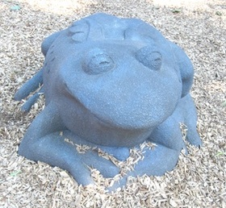
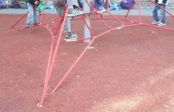

What I Learned About Building a Natural Playground in a TDSB School

Sydney's Playground is the new natural(ish) kindergarten playground at Maurice Cody Elementary school. It's named for one of our kindergarteners, who was killed in a traffic crash while we were in the process of planning the playground. (This post isn't about Sydney, but it seemed weird to write about the playground without mentioning her.)
This post is about the process of designing and building a natural playground in a TDSB school. When we embarked on the process of building a natural playground at Maurice Cody there was very little guidance on how to go about building a playground, so I am writing this in the hope that it will help someone else.
The caveat is that your mileage may vary: I am not sure how consistent the TDSB is in terms of policies and processes, and for all I know your experience will be completely different. Even if it is, I hope this post gives you some idea of what's possible and what's likely to happen. But first...
A Little About Natural Playgrounds
A natural playground is a playground built with natural elements instead of artificial play structures. They are desirable for various reasons:
Being in a natural environment has been shown to improve concentration and learning
Unstructured play elements are better for imaginative play in much the same way that plain Lego blocks are more demanding than Lego kits with funny shaped blocks and instructions
Natural elements like logs and rocks are theoretically less expensive than manufactured play structures
What The TDSB Will Do For You
Our school is one of the few in the TDSB that's growing, and a couple of years ago the school board built a second playground for the nine kindergarten classes. When I say "built" I mean they fenced off an area, built some stairs and put down some mulch. You may not realize this — I certainly didn't — but the TDSB is not in the playground-building business. Despite having your 3-, 4- and 5-year-olds in their care for six hours a day, and despite the massive importance of outside play and gross motor activity for early childhood development, the TDSB does not build playgrounds. They do landscaping, hence the fencing and mulch, but they don't do playgrounds.
That's up to you, the parents. You have to decide to build a playground, you have to guide and help manage the consultation and design process and you have to raise the money.
So there we were with the outline of a playground, and since I was eco-committee chair at the time I suggested we should take the opportunity to build a natural playground. The idea was greeted with various degrees of enthusiasm; I think mostly people were just glad someone was doing something about what the kids had named "the nothing playground".
I'm going through the years — literally — of emails on this topic and I think I had better give you the condensed version. (I sent my very first email about the natural playground in January 2010, and we finished the playground in August 2012.)
So here's the compressed, idealized process, with advice.
1. Get Your Ducks (And Your Dollars) In A Row
First you need to decide you're going to do it. You'll have to sell your parents, your administration and your teachers on a natural playground. (I didn't have any trouble with that up front, although there was some pushback later when people realized what a natural playground actually meant, and I had to explain the concepts over and over.)
Next you need to meet with your community — teachers, parents, staff — and talk about what you want from the playground. Both from a high-level, philosophical angle and also about the specifics of what you want: A slide? An outdoor classroom? A sand box? Make sure everyone has been included and that you all roughly agree on what you want. You have to do this before you come to the table with the TDSB playground designers.
This was one of the most frustrating parts for me, because I didn't feel we were in any position to make these decisions: we didn't have either a landscape architect or a playground designer on our team and we had no idea what was possible or desirable. But the TDSB wants you to have met, discussed and agreed before you come to them.
They also want you to have $10 000. Or at least, that's the sum we had to pony up to prove that we were serious about funding a playground.
Once you have expressed your interest in building a playground, there will be a meeting with the TDSB groundskeeping staff, the school administration, and representatives of parents and of teachers. This meeting tripped us up because the kindergarten staff just sent whichever random teacher was available, and that teacher hadn't been to any of our previous meetings. So she had no clue what the concept of a natural playground was and I spent half the meeting explaining it to her and telling her why we didn't actually want those bouncy spring toys or another playhouse. As a result we looked like we hadn't consulted at all, and we got a stern talking-to from the TDSB designer. She didn't want to hear from us again until we had consensus on what we wanted.
Don't make the same mistake. Make sure everyone involved understands what you want.
2. Get To Know Evergreen
You know Evergreen: they're the people behind the Brickworks, where you go for fresh organic produce (or waffles and French fries, if you're me) at their Farmer's Market, to fix your bike, and where your kids can look for turtles and make stuff in their natural playground, Chimney Court.
But Evergreen also works very closely with the TDSB to do schoolyard greening and playground development. I'm not sure exactly how their relationship works, but several people we worked with seemed to be employed by both Evergreen and the TDSB.
Evergreen is also a source of grants, through their Toyota Evergreen Learning Grounds School Ground Greening Grants, which is available to pay for plants and certain playground elements.
3. Be Flexible
Once you have furnished the $10 000 and convinced the TDSB you have some consensus on what you want, they will assign you a landscape architect (no, you don't get to decide who your landscape architect is) and you'll meet with them. By now I think a few schools have attempted to build natural playgrounds, so you shouldn't have to spend too much time explaining what you want and why. But when you're going through the design process, keep in mind what a "natural playground" means to your team, and be prepared to be flexible about what yours will include.

For example, a playground needs a climbing structure, to help develop balance and upper-body strength. Some natural climbing structures are, for example, really large rocks and trees. There is no way we could afford really large rocks, and trees freak out teachers. So we ended up looking for a manufactured climbing structure. At one point during our design meetings we had to choose between an abstract rope climbing structure and a "fort". Neither are natural, but we chose the rope structure because it satisfied our requirement of being abstract and, for want of a better phrase, narratively neutral. It can be a tent, a rocket, a tree... The fort might be a castle or a house but it's always a building — a manufactured simulacrum of a manufactured structure.
Even after we had been working with the concept of a natural playground for a long time, some members of the team didn't get it. At one point the quote for the playground came back much higher than we anticipated, and we had to look at cutting some elements. One of our team members was very put out that we would only have "two pieces of equipment" in the playground, meaning the slide and the climber. Those, of course, were the two manufactured elements. She was overlooking the retaining walls (a.k.a., balance beams, fortresses, tightropes), the log benches (a.k.a., balance beams, dragons, mountains, blast shields), the sand box, the rocks (a.k.a., icebergs, dinner tables, space ships, go-carts), and everything else that didn't come in a big box labelled "fun play equipment".
4. Think Long-Term
One important consideration was the expected lack of maintenance. Basically with a TDSB playground, it gets installed and that's it until it's time to take it down and put up something else. Of course the staff will repair things when they break, but you can't include a cool willow tunnel or anything that needs a lot of attention as it grows, and if you put in planter boxes you'd better be damn sure someone is committed to maintaining them. Bear in mind that even if the current community of parents is committed to maintaining the playground, the next generation may not be. You don't want to install something that's going to become a liability or an eyesore.
{kind=link}
5. Try To Keep Your Patience
Working with the TDSB was frustrating at times. It's such a large, cumbersome organization that there doesn't seem to be good communication even within it, let alone with the rest of the world. Three examples of this:
It's hard to figure out which playground equipment suppliers you can use. At one point we tried to get a list of TDSB-approved suppliers, and it seems there is no such list. But you can't purchase equipment from just anyone. What we ended up doing was giving pictures of stuff we liked to the landscape architect, and she sourced similar elements from providers she knew were approved.
-
We had one really fantastic meeting toward the end of the design process. All the interested parties were there: designer, grounds staff, administration, parents, teachers, and Sydney's father. It was the meeting where we made all the final design decisions, including the specific elements and colours we wanted. We had two design principals: to keep the playground visually natural, and to incorporate pink, which was Sydney's favourite colour. We chose a pink slide and complemented it with a green frog sculpture. We also chose red for the climbing structure (because red is kind of like pink?), and tan for the rubbery safety surfacing around the slide and climber. Lovely, right?
Well, it turns out the TDSB only uses a brick red colour for the safety surfacing, at all their schools. We didn't find that out until they installed it. You can imagine how great brick red looks with a pink slide and red rope climber. If we had known that — if the TDSB staff who was at the meeting had known that — we would have made different choices for the colours.
(Incidentally, when the frog arrived she wasn't green, she was grey. I don't know where the screw-up was: was she ordered wrong? Was she manufactured wrong?)
-
I wanted logs. Logs are such an obvious element in a natural playground. But the TDSB Grounds Team Leader didn't like logs. He said they attract carpenter ants and wasps, they're a liability and no-one wants to pay to have them removed when they rot. I had visited a playground which was built 15 years ago and had no problems with their logs, but he was quite adamant that logs were not an option. We ended up looking at fake logs made out of cement.

And then suddenly, after months of no logs, logs were an option. I'm not sure what changed, but at that same meeting when we decided on the colours, the Grounds Team leader said that he had a source for nice hardwood logs that wouldn't rot. He said they remove the bark from the logs, and if they install them on gravel so they're well-drained there's no concern about rotting. Great! Let's have logs! I was really happy about the logs.
And then the logs were installed. As you can see, they do not have the bark stripped from them, and they are not installed on nice, well-drained gravel. I have no idea what went wrong there, but obviously the Grounds Team leader's specifications for logs were either not communicated, or not met. I'm not even sure if the logs were from the same provider he was thinking of.
So did we end up with a natural playground? Kind of half-and-half. The playground has lots of natural elements, including the trees which were already there, some new shrubs we planted, the problematic logs, rocks, wooden landscaping elements like retaining walls, stone seating, and a slide built into a natural slope in the playground. We also have some unnatural elements, like the surfacing, which is required around the slide according to safety regulations (even though the slide is at ground level!) and the climber. And we have the frog, which is kind of emblematic of nature and just really sweet.
 kind of
creeps up the slope and looks better than the red.")
Between the safety considerations, the limitations on providers, the lack of maintenance, and the lack of understanding of the concept of natural playgrounds, it would be very hard to have a truly natural playground in the TDSB. But if you communicate the concepts behind a natural playground clearly to your school community and convince them it's a good idea, you can get pretty close, and you can definitely install a playground which provides a rich, natural environment for your children to learn and grow in.
Please feel free to contact me if you want more information about building natural playgrounds or if you would like a tour of Sydney's Playground.
Comments
Comments powered by Disqus